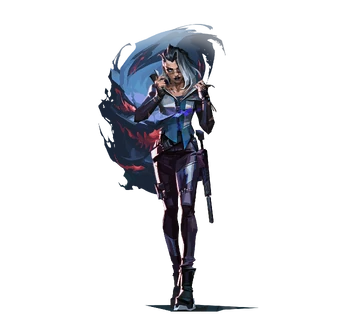

| Una Radiant de Türkiye, Hazal Eyletmez busca a una persona de importancia para ella después de que "se lo quitaron". Usando su habilidad para ver visiones de pesadilla, sus interpretaciones inicialmente la llevaron a sospechar que él había sido secuestrado por una organización secreta que descubrió que era el Protocolo VALORANT. Eyletmez decidió ponerse en contacto con el Protocolo bajo una marca anónima, amenazando con exponer a la organización si se enteraba de que eran los responsables del secuestro. Cuando parecía que solo tenían interés en localizarla en lugar de tomarla en serio, se puso en contacto personalmente con cada agente con un expediente sobre ellos para mostrar cuánto sabía sobre la gente de VALORANT y qué podía exponer al público si no tenían interés. en probar su inocencia. Sin embargo, VALORANT aún se negó a ceder y pronto envió un equipo de ataque a Estambul para detenerla. Eyletmez intentó usar sus poderes Radiant para distraerlos y huir sin ser detectada, pero fue detectada justo cuando estaba escapando, lo que permitió que el robot Anti-Yield KAY/O saltara en su posición y la derribara con un pulso de supresión. Posteriormente detenido y llevado a una base de VP, Eyletmez fue interrogado allí por agentes superiores. Sin embargo, fue debido a estas reuniones directas cara a cara que salió a la luz una información crítica: VALORANT no tenía idea de a quién estaba tratando de rastrear y no sabía nada de ningún secuestro. Quienquiera que haya sido el responsable de la desaparición del hombre, no fue el Protocolo VALORANT. Fue después de esta revelación que Eyletmez también se enteró de la existencia de otros mundos y se le sugirió que tal vez su grupo desconocido provenía de uno de estos mundos. Los propios VALORANT ya se estaban preparando para viajar a uno, ya que tuvieron que suspender ese proyecto para tratar con Eyletmez. Su búsqueda también había expuesto cuán dependiente era el Protocolo de agentes específicos para obtener información, y como resultado buscaban reclutar más. Como no había más motivos para que los dos fueran enemigos, los agentes superiores de VALORANT decidieron preguntarle si se uniría a la organización y los ayudaría a recopilar información durante su viaje a Omega Earth. Eligiendo dejar atrás este malentendido, Eyletmez aceptó su oferta para convertirse en su vigésimo agente, "Fade". Ahora lleva el estandarte del Protocolo VALORANT, pero solo mientras la acerque a la persona que busca. |
 |